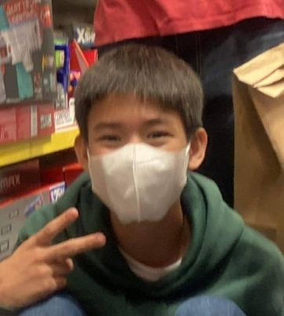

 Simon Timothy M. Garcia is one of the few members of Grade 9 Borgia. As a member Ateneo de Davao University, Simon is an old student that has experience about Ateneo as a whole with different types of stories. He loves to tallk about biology since that he has tons of knowledge of it, as an extrovert he likes to talk to many people vary from other extroverts and introverts. As any extrovert he helps any person that may need help even though it might be hard he tries to help them as best as he can. As part of the Group he tries to answer and make different codes to see if it willl impact his work for his team.